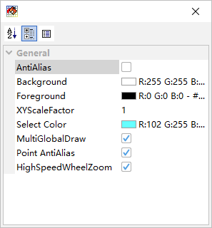
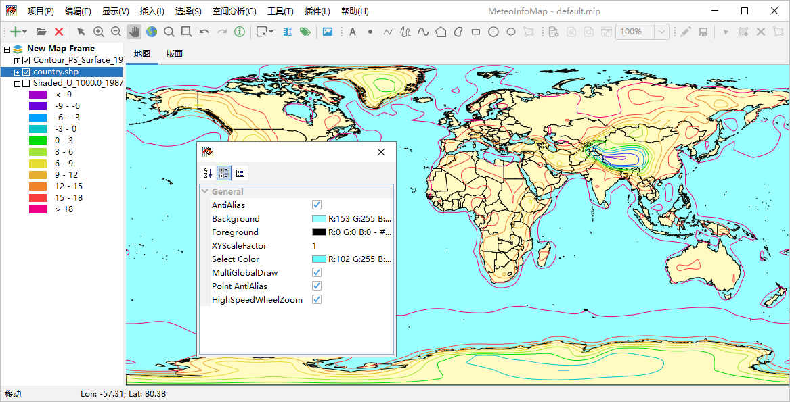

地图属性¶
地图显示的一些属性特征可以通过“显示 -> 地图属性”菜单弹出的地图属性对话框进行设置。AntiAlias属性可以设置地图中的图 形显示是否开启反锯齿，开启反锯齿后可以提高图形的显示效果，但会让图形的显示速度变慢。Background和Foreground属性是 来设置地图的背景色和前景色。XYScaleFactor属性设置地图显示纵横比例，比如在等经纬度投影中比例值为1时中国地图看起来比 较扁，设置为1.2会让图形的纵向更长一些。MultiGlobalDraw属性仅在等经纬度投影中使用，选中该属性地图区域会并排绘制三个 全球范围地图，很多气象数据的经度范围是0 - 360度，而传统GIS地图的经纬度是-180 – 180度，提供此选项能够使气象数据和 地图数据的显示匹配起来。PointAntiAlias属性设置是否在绘制点的时候开启反锯齿效果，这个是对点图形绘制质量的单独设置。 HighSpeedWheelZoom属性勾选后鼠标滚轮缩放地图的速度会比较快，但缩放过程中图形的显示质量下降，在缩小过程中地图显示区 域会有白边。不勾选该属性能改善图形缩放过程中图形的显示质量，缩小过程也没有白边，但缩放时的图形显示速度降低。
下图是将反锯齿属性选中并将地图背景色设置为淡蓝色的效果示例。
